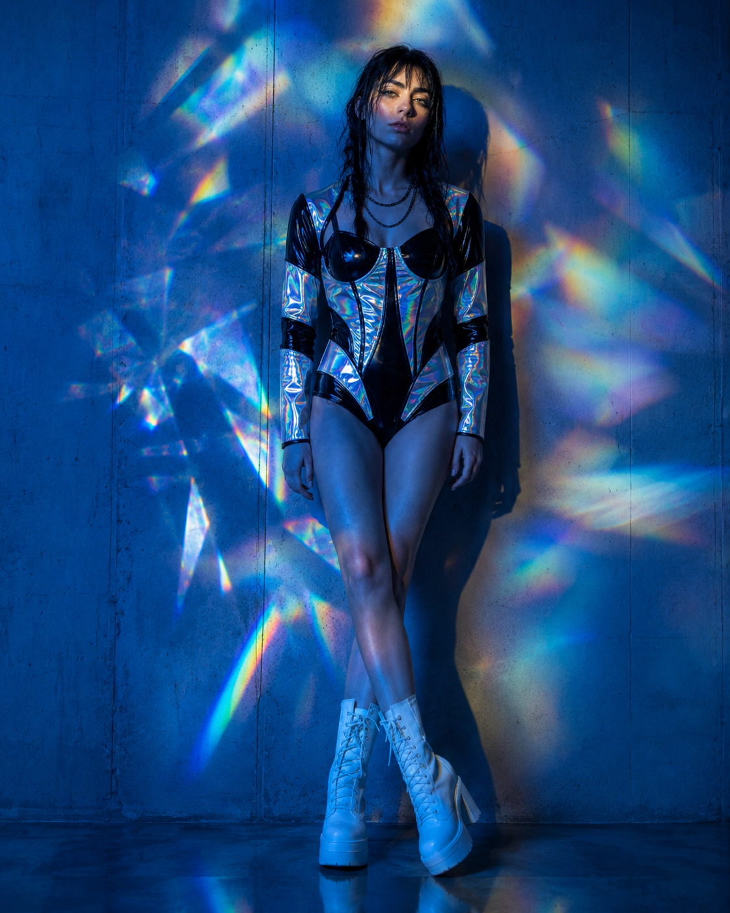
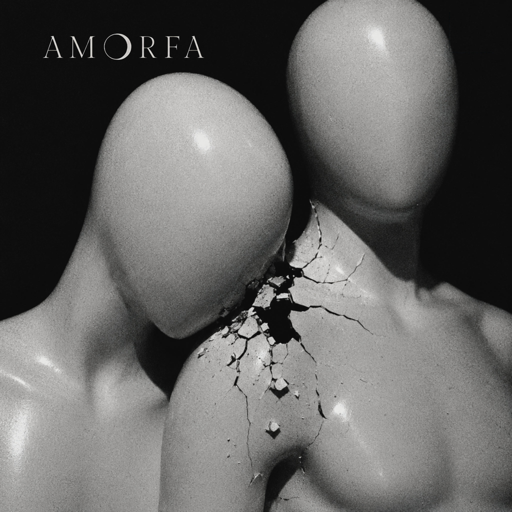
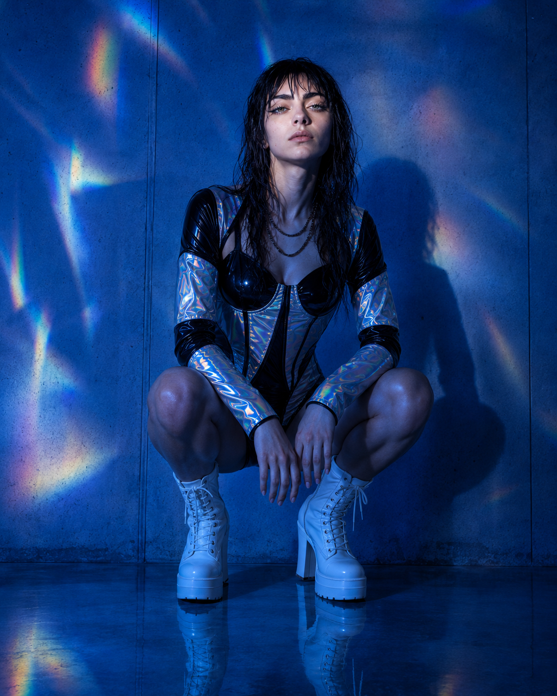
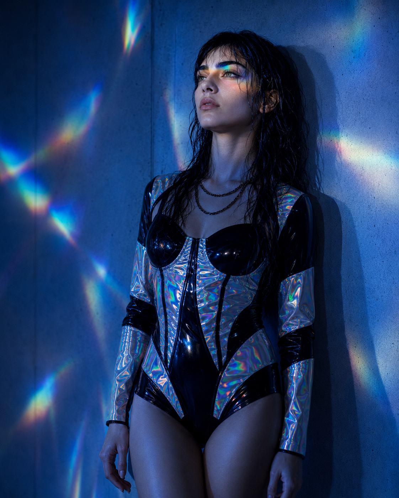

Desaparecer Bonito
Câmera, desejo, aplicativos de relacionamento, corpo, astrologia, recaída, solidão e algumas decisões tomadas tarde demais sob uma luz muito bonita.
“Eu estava escrevendo situações.”
Escolher uma foto. Esperar reação. Conferir quem viu. Abrir um aplicativo tarde demais. Gostar de alguém porque a imagem funciona antes de descobrir se a pessoa funciona. Investigar uma foto que definitivamente não precisava de investigação. Dormir com o telefone aceso ao lado da cama.
Foi assim que várias músicas começaram a se encontrar. Não como capítulos de uma história única, mas como situações reconhecíveis: desejo mediado por interface, relações que passam por bio e filtro, corpos avaliados em segundos, ex que continua existindo pelo rastro digital, vontade de sumir e vontade de ser visto brigando na mesma noite.
Desaparecer Bonito também nasceu de uma segunda decisão. Antes dele, esse material já havia formado outro Álbum I. Depois, parte das músicas mudou de lugar, novas canções entraram e a ordem foi refeita. Produzir muito tinha sido uma descoberta; editar o que ficaria junto virou outra.

O primeiro álbum era outro.
Em 29 de maio de 2026, a primeira configuração do Álbum I aparecia como Tudo Que Eu Uso Me Usa de Volta. Também eram treze faixas. A capa era o encontro de dois manequins rachando exatamente no ponto de contato.
A formação começava com Versão Consumida e terminava com Terminal. Luz Azul, Modo Avião, Livre Pra Quem?, Kouros de Silício, Corpo-Entulho, Vênus Aflita e Terminal atravessaram a mudança.
Outras músicas encontraram outro destino. Fusão Nuclear e Você Era Banal, por exemplo, acabariam em O Amor Que Achei Merecer. Enquanto isso, canções que ainda estavam fora da tracklist principal — como A Câmera Ama, Crédito de Uso e a então Olhadinha — entraram na nova organização.
A mudança não apaga a primeira versão. Ela mostra o momento em que o projeto ainda estava descobrindo a própria escala. A produção veio em volume porque havia anos de texto acumulado e, de repente, uma maneira de ouvir aquilo. Depois ficou mais claro que produzir e publicar eram decisões diferentes — e que uma tracklist também precisava saber dizer não.
Tudo Que Eu Uso Me Usa de Volta
- 01Versão Consumida
- 02Fusão Nuclear
- 03Luz Azulpermaneceu
- 04Modo Aviãopermaneceu
- 05Só o Que Vende / Livre Pra Quempermaneceu
- 06Kouros de Silíciopermaneceu
- 07Corpo-Entulhopermaneceu
- 08Vênus Aflitapermaneceu
- 09Você Era Banal
- 10Placebo
- 11Glamour Febril
- 12Cento e Oitenta
- 13Terminalpermaneceu
Desaparecer Bonito
- 01A Câmera Ama (Todo Mundo Sabe)
- 02Luz Azulpermaneceu
- 03Livre Pra Quem?permaneceu
- 04Vênus Aflitapermaneceu
- 05Kouros de Silíciopermaneceu
- 06Corpo-Entulhopermaneceu
- 07Modo Aviãopermaneceu
- 08Eu Superei Mas... (Olhadinha)
- 09Ninguém Nunca Sabe
- 10Crédito de Uso
- 11Low Profile
- 12Terminalpermaneceu
- 13Obliterar
Tem gente do outro lado da tela.
É fácil reduzir o álbum a uma crítica à internet porque existe muita tela dentro dele. Só que boa parte dessas telas está ali porque existe outra pessoa do outro lado.
Luz Azul fala da rapidez com que o desejo pode ser administrado por uma interface. Livre Pra Quem? entra diretamente nos aplicativos de relacionamento e na maneira como bios, corpos, idade, masculinidade e aparência passam a funcionar como critérios de acesso. Modo Avião transforma indisponibilidade em defesa. Eu Superei Mas... mostra o ex continuando a existir como arquivo pesquisável. Ninguém Nunca Sabe volta para a madrugada em que a pessoa apaga a conta e cria outra esperando uma resposta diferente.
A tecnologia, portanto, não aparece apenas como máquina que afasta. Ela também permite encontro, sexo, conversa, descoberta e intimidade que talvez não existissem da mesma forma sem ela. O desconforto vem porque as mesmas ferramentas que aproximam também aprendem a medir, ordenar, comparar e repetir.
Dançar não deixa o assunto mais leve.
O álbum gosta de música que se move. Electroclash, new wave, synth-pop, indie dance e post-punk disco aparecem de maneiras diferentes conforme a faixa pede. Eu Superei Mas... chega a brincar com uma memória de girl-groups antigos; Kouros de Silício abre espaço para uma solenidade mais estranha; Crédito de Uso é deliberadamente mais doce por fora.
As referências de época não entram para montar fantasia retrô. Elas ajudam cada canção a escolher sua temperatura: sedução, ironia, obsessão, desgaste ou explosão.
Faixa a faixa.
A Câmera Ama (Todo Mundo Sabe)
“Também sei os bordões. / Também fico até o fim.”
LER LETRA+
A Câmera Ama (Todo Mundo Sabe)
Luz branca acesa.
Boca pronta.
Dente seco.
Olho fixo.
Trinta segundos de certeza
numa cabeça sem atrito.
Todo desastre ganha corte.
Toda fala ganha filtro.
O vazio veste sorriso
quando descobre que rende.
A câmera ama
cabeça lisa.
(lisa)
Todo mundo sabe.
(sa-be)
Todo mundo clica.
(clica)
Todo mundo cospe.
Todo mundo volta.
(volta)
A gente abriu vitrine
pro vazio.
Todo mundo sabe.
(sa-be)
Todo mundo clica.
(clica)
A bênção veio
sem pensamento.
Clica.
(clica)
Diz que odeia.
Assiste inteiro.
Manda no grupo
com nojo e risada.
Salva o vídeo.
Comenta morta.
Dá mais alcance
à própria náusea.
O algoritmo não tem gosto.
Tem meta
e repetição.
Toda vergonha com plateia
ganha roupa de campanha.
Quando a fala falha,
muda o enquadramento.
Até o pedido de desculpas
vem com thumbnail limpa.
A burrice veio
de branco.
(branco)
Todo mundo sabe.
(sa-be)
Todo mundo clica.
(clica)
Todo mundo cospe.
Todo mundo volta.
(volta)
A gente abriu vitrine
pro vazio.
Todo mundo sabe.
(sa-be)
Todo mundo clica.
(clica)
A bênção veio
sem pensamento.
Clica.
(clica)
Também sei os bordões.
Também fico até o fim.
A tela serve anestesia.
Meu dedo assina.
Minha boca ri.
Finjo escolha.
Ela chama vício.
(vício)
A ignorância é bênção.
A bênção é serviço.
A câmera ama.
(ama)
A câmera ama.
(ama)
Cabeça lisa.
(lisa)
Cabeça lisa.
(lisa)
O feed aplaude.
(aplaude)
Todo mundo sabe.
(sa-be, sa-be)
Todo mundo clica.
(clica)
Todo mundo cospe.
Todo mundo volta.
(volta)
A gente abriu vitrine
pro vazio.
Todo mundo sabe.
(sa-be)
Todo mundo clica.
(clica)
A bênção veio
sem pensamento.
(pensamento)
Cabeça lisa.
(clique)
Boca pronta.
(clique)
Dente seco.
(clique)
Feed aberto.
(clique)
A câmera ama.
(clique)
Ninguém desliga.
ABRIR NO MUSIXMATCH ↗Luz Azul
“A tela apaga. / A fome fica.”
Foi a primeira música escrita dessa leva. A ideia já estava quase inteira ali: desejo atravessado por interface, excesso de escolha, proximidade medida em metros e uma sensação de falta que reaparece logo depois de cada encontro.
A personagem sabe que está repetindo o gesto. Ela diz que não quer voltar e volta. A música nunca precisa decidir se o problema é a tela ou aquilo que a pessoa procura nela — as duas coisas ficam misturadas.
LER LETRA+
Luz Azul
O polegar desce.
A íris dilata.
Um rosto some,
outro aparece.
Tão perto em metros,
tão longe em mim.
Eu passo o dedo.
Eu digo sim.
Vidro frio.
Boca seca.
O corpo aprende
a escolher depressa.
Escolho rápido.
Dispenso limpo.
Do outro lado,
o mesmo ritmo.
A pressa resolve
o que o desejo
levaria tempo
pra ferir.
Nada para.
Nada imprime.
A luz exibe.
Não reúne.
não reúne
Mastigamos claridade.
Eu volto
pra luz azul.
Volto sem querer voltar.
Um corpo some,
outro vem ocupar.
Eu deixo
a parte mais quente
numa tela
sem mão.
A luz me come por dentro
e chama isso de opção.
opção
Luz azul.
Luz azul.
Eu volto
pra luz azul.
sem peso
Quarto no escuro.
Corpo em porção.
Ombro.
Boca.
Sem nome
sem chão.
Um beijo curto.
Um táxi longe.
A noite passa
e não responde.
Eu viro imagem,
boa o bastante.
Dura um segundo.
Depois distante.
Sal no vidro.
Resto morno.
Eu recolho
o que sobrou de mim.
A pele do dedo
já não agarra.
No fim da falange,
o desenho falha.
Cada deslizamento
alisa um pouco
o lugar da marca
que ninguém nota.
ninguém nota
Mastigamos claridade.
Eu volto
pra luz azul.
Volto sem querer voltar.
Um corpo some,
outro vem ocupar.
Eu deixo
a parte mais quente
numa tela
sem mão.
A luz me come por dentro
e chama isso de opção.
opção
Luz azul.
Luz azul.
Eu volto
pra luz azul.
A oferta volta crua
pro corpo
que ofertou.
Eu saio com a boca cheia
do que não ficou.
O brilho azul
ainda aberto.
O quarto inteiro
aceso demais.
Eu digo:
foi só desejo.
Mas volto
pra procurar mais.
O polegar desce.
A íris dilata.
Nada para.
Nada passa.
O polegar desce.
A íris dilata.
Nada para.
Nada basta.
Eu volto
pra luz azul.
Volto sem querer voltar.
Um corpo some,
outro vem ocupar.
Eu deixo
a parte mais quente
numa tela
sem mão.
A luz me come por dentro
e chama isso de opção.
opção
Eu volto
pra luz azul.
Volto sem querer voltar.
Mastigamos claridade
até sobrar
só clarão.
A tela apaga.
A fome fica.
fica
A tela apaga.
A fome fica.
ABRIR NO MUSIXMATCH ↗Fome viral
Tateamos a luz azul como quem redescobre o fogo.
Mantenho a íris aberta, cansada de si, ofertando meu sono
aos oráculos de silício.
O dedo que rola a tela imita a tração
de uma mandíbula interna que nunca para de mastigar.
Deixamos a carne no altar dos dados.
O rosto segue para o reconhecimento,
a ansiedade para o fluxo contínuo
que sussurra por redenção na próxima rolagem.
Sou fóssil recém-nascido, arquivo prematuro, eco sem catedral.
Cruzo fronteiras de fibra ótica:
o exílio sempre coube no bolso.
Toda ausência simula presença.
Cada notificação ensaia promessa.
Na tela, o dedo abre o vidro frio.
Corte seco.
Me torno backup esquecido.
Arquivo corrompido de afetos desajustados.
A vigília me mantém aqui
pelo medo de apagar a tela
e encontrar, no espelho negro,
um rosto que já não reconheço.
Livre Pra Quem?
“Se o corpo é deus / e o afeto é dízimo.”
A música nasceu do ambiente dos aplicativos de relacionamento: bios que parecem pequenas cláusulas de admissão, preferências que rapidamente viram hierarquia e uma ideia de liberdade que não é distribuída da mesma maneira para todo mundo.
“Ativo. Discreto. Não afeminado.” aparece porque esse vocabulário existe como forma de seleção. A faixa olha para o modo como rejeição, desejo, masculinidade, idade, corpo e vergonha se misturam — inclusive entre pessoas que também conhecem a experiência de serem excluídas.
O golpe mais importante vem no fim: quem canta percebe que começou a reproduzir o mesmo sistema que a machuca. A pergunta do título continua sem uma resposta confortável.
LER LETRA+
Livre Pra Quem?
Eu te amo
se rende em story.
Se tua selfie
acende alguma coisa em mim.
Antes da alma.
Antes da queda.
Antes da parte
que ninguém quer ver.
Eu te amo
se for a curva certa.
Se tua idade
caber no filtro.
Se tua pele
couber na fantasia
de quem escolhe
e nunca sangra.
No fundo,
eu amo
o que me exclui.
Gozo
com quem me apaga.
me apaga.
me apaga.
Aprendi cedo:
afeto demais fede.
Querer demais
afasta.
Amar
é perder poder.
Eu te amo,
mas só o que vende.
o que vende.
Só o que brilha.
Só o que prende.
Eu te amo,
mas só o que rende.
o que rende.
Um story bonito
e ninguém por dentro.
Livre pra quem?
Livre pra quem?
pra quem?
pra quem?
Se o corpo é deus
e o afeto é dízimo.
Livre pra quem?
Só o que vende.
Só o que vende.
Livre pra quem?
Livre pra quem?
Amo tua bio no app.
Ativo.
Discreto.
Não afeminado.
Sem tempo pra drama.
Corpo é meu templo,
desde que minha alma
não entre
sem convite.
Amo competir
pelo nada.
Amo a fila
dos outros.
Amo quando me deixam
no vácuo.
no vácuo.
no vácuo.
Por um segundo,
existiram demais
pra mim.
E nós,
velhos aos trinta.
Afeminados que sobraram.
Os de cicatriz.
Os que choram.
Os que amam
sem contrato de uso.
Viramos piada
em grupo de zap.
Boa noite
sem resposta.
Nude deixado
no visto.
E dizem
que o amor é livre.
é livre?
é livre?
Eu te amo,
mas só se vende.
se vende.
Só se corta.
Só se rende.
se rende.
Eu te amo,
mas só se cabe
no corpo certo,
na pose certa,
na fome certa.
Livre pra quem?
Livre pra quem?
pra quem?
pra quem?
Se a vitrine escolhe
quem pode sofrer bonito.
Livre pra quem?
Te amo com raiva
de quem esperou amor
e recebeu
emoji de fogo.
Te amo
quando me apaga.
Quando vira algoritmo
de rosto perfeito,
alma ausente.
alma ausente.
Te amo
como vício coletivo,
como febre
de aprovação.
Como culto
onde o corpo é deus.
Todo mundo ajoelha.
Ninguém
encosta de verdade.
Sem opinião.
Sem choro.
Sem marca.
Sem fome.
sem fome.
Bonito em silêncio.
Limpo na foto.
Sem opinião.
Sem choro.
Sem marca.
Sem fome.
sem fome.
Perfeito
pra não amar ninguém.
Eu te amo,
mas só o que vende.
o que vende.
Só o que brilha.
Só o que prende.
Eu te amo,
mas já não sei
se sou quem deseja
ou quem aprendeu
a desaparecer.
desaparecer.
desaparecer.
Livre pra quem?
Livre pra quem?
pra quem?
pra quem?
Se amar é risco.
Se afeto é dívida.
Se o corpo é templo
e eu fico
do lado de fora.
Livre pra quem?
Só o que vende.
Só o que vende.
Livre pra quem?
Livre pra quem?
Só o que vende.
Só o que vende.
Eu te amo
com culpa.
Com vergonha.
Com medo.
De tanto amar errado,
me tornei igual.
me tornei igual.
Eu te amo,
mas só
o que vende.
ABRIR NO MUSIXMATCH ↗Amor em condições de uso
Te amo se tua selfie acender algo em mim
antes da tua alma.
Se tua barriga narrar tua rotina na academia
e a alma permanecer muda.
Te amo se fores a curva certa.
Se tua melanina couber na fantasia do outro,
e tua idade passar no filtro da juventude eterna.
Desejo o que me exclui
e gozo com o que me apaga.
Prefiro-te sem opinião.
Bonito em silêncio.
Com o olhar intacto
de quem nunca chorou por ninguém.
Orbitar é o que faço melhor
ao redor de quem não me quer.
Celebro tua bio no app.
O “ativo, discreto, não afeminado”.
O “corpo é meu templo”,
desde que minha alma
não atravesse a porta sem convite.
E nós,
os velhos aos trinta,
os afeminados que sobraram,
os corpos com cicatriz,
os que choram,
os que amam sem contrato de uso,
viramos piada.
Habitamos a ala dos ignorados:
“boa noite” sem resposta,
nudes deixadas no visto.
Dizem que o amor é livre.
Afeto demais fede.
Demonstrar demais afasta.
Sentimento custa poder.
Continuo mesmo quando me apagas.
Mesmo quando és algoritmo:
rosto perfeito,
alma ausente.
Isso é qualquer coisa menos amor
vício coletivo.
febre por aprovação.
culto onde o corpo é deus
e o afeto tratado como pecado.
Vênus Aflita
“Tua sinastria / deu positivo.”
A ideia é quase uma piada séria: usar mapa astral como exame antes de se envolver com alguém. Hora de nascimento, ascendente, casa oito e sinastria viram tentativas de obter alguma garantia sobre uma decisão que o desejo provavelmente já tomou.
Ela fica melhor quando astrologia não é tratada nem como verdade absoluta nem como deboche. É só mais uma ferramenta para procurar sinais.
LER LETRA+
Vênus Aflita
Me diz
tua hora de nascimento.
Teu ascendente
tem cara
de mensagem longa
às quatro e treze.
Lua em água.
Olho vermelho.
Tua mão parada
fazendo fumaça
na mesa de inox.
Mercúrio retrógrado.
Teu beijo torto.
Eu gosto
de catástrofe
com legenda.
Me diz
tua hora de nascimento.
Teu mapa astral
bateu no meu vício.
Vênus aflita.
Pulso bonito.
Eu faço amor
igual previsão.
(BV) previsão / previsão
Tua sinastria
deu positivo.
Tua sinastria
deu positivo.
Você tem
cara de casa oito.
Problema caro.
Boca de risco.
Eu leio tua mão.
Linha da vida
batendo no meu cinto.
Teu sol quadrado.
Minha língua em queda.
A conta fecha.
A gente não.
Marte no quarto.
Febre no copo.
Eu gosto
de queda
com laudo.
Me diz
tua hora de nascimento.
Teu mapa astral
bateu no meu vício.
Vênus aflita.
Pulso bonito.
Eu faço amor
igual previsão.
(BV) previsão / previsão
Tua sinastria
deu positivo.
Tua sinastria
deu positivo.
Não quero destino.
Quero dado sujo.
Margem curta.
Risco alto.
Teu céu aberto
na minha perícia.
O dado
virou corpo.
positivo
positivo
Me diz
tua hora de nascimento.
Teu mapa astral
bateu no meu vício.
Vênus aflita.
Pulso bonito.
Eu faço amor
igual previsão.
ABRIR NO MUSIXMATCH ↗Kouros de Silício
“Eu olhava e aprendia / a ficar menos corpo.”
O corpo desejado aqui funciona como régua. Banheiro, espelho, bio e pose começam a ensinar alguém a corrigir ombro, barriga, boca e postura sem que ninguém precise mandar.
O título transforma o ideal masculino numa espécie de estátua digital: bonita, lisa, distante e impossível de alcançar sem diminuir o próprio corpo.
LER LETRA+
Kouros de Silício
azulejo branco.
lâmpada fria.
(azulejo branco.
lâmpada fria.)
espelho do banheiro.
Tua pele segurava a luz
do lado certo do vidro.
eu olhava e aprendia
a ficar menos corpo.
na bio:
ativo.
discreto.
sem drama.
(sem drama)
a tela dizia sem dizer.
pra te querer,
endireitei os ombros.
prendi a barriga.
mudei minha boca de lugar.
pra te querer,
eu já obedecia.
endireitei os ombros.
prendi a barriga.
mudei minha boca de lugar.
eu já obedecia.
kouros de silício
me ensina a posar.
sem ruííína.
sem peso.
sem falha.
kouros de silício
me ensina a ficar
do lado certo do vidro.
(do lado certo)
do lado certo do vidro.
(ah — ah)
(ah — ah)
teu rosto vinha limpo.
sem queda.
sem resto.
sem noite.
o homem inteiro
fora do quadro.
só pele.
só o corte.
só a luz no lugar certo
no visor.
a ordem vinha sem voz.
pra tocar tua pele,
corrigi meu defeito:
maxilar firme.
barriga presa.
meu desejo
em modo retrato.
maxilar firme.
barriga presa.
modo retrato.
kouros de silício
me ensina a posar.
sem ruína.
sem peso.
sem falha.
do lado certo do vidro.
(do lado certo)
(ah — ah — ah)
sem ruína.
sem peso.
sem falha.
(sem ruína,
sem peso,
sem falha)
a tela apagou,
mas deixou o comando.
no quarto ajuste:
maxilar firme.
barriga presa.
meu reflexo copiando
tua falta de ruína.
ativo.
discreto.
sem drama.
(ativo,
discreto,
sem drama)
prende.
corrige.
posa.
(posa)
prende.
corrige.
kouros de silício
me ensina a posar.
sem ruííína.
sem peso.
sem falha.
kouros de silício
me ensina a ficar
do lado certo do vidro.
(do lado certo)
do lado certo do vidro.
POSA!
Kouros de Silííício.
meu reflexo copiando.
ABRIR NO MUSIXMATCH ↗Corpo-Entulho
“A pose morre.”
Depois de tanta correção, esta é a música em que o corpo larga o serviço. Ombro cai, barriga cede, ninguém está olhando e por alguns minutos não existe obrigação de caber em retrato nenhum.
“Entulho” é uma palavra feia de propósito. A faixa não tenta transformar exaustão corporal em imagem bonita.
LER LETRA+
Corpo-Entulho
zero sinal.
zero luz.
zero testemunha.
ombro cai.
barriga cede.
a pose morre.
a pose morre.
a pose morre.
finalmente:
ninguém.
finalmente:
ninguém.
parecia normal.
faltava pedaço.
faltava pedaço.
faltava o quê?
corpo-entulho.
no chão.
sem legenda.
sem perdão.
o peso venceu.
ninguém fala.
ninguém fala.
não caibo
no modo retrato.
não caibo
no modo retrato.
modo retrato.
corpo.
entulho.
corpo.
entulho.
luz de banheiro.
pele dobrada.
hálito antigo.
roupa marcada.
a tela corta.
o corpo sobra.
a tela corta.
o corpo sobra.
corpo sobra.
parecia limpo.
faltava resto.
parecia certo.
faltava gesto.
finalmente:
ninguém.
finalmente:
ninguém.
parecia normal.
faltava pedaço.
faltava pedaço.
faltava o quê?
corpo-entulho.
no chão.
sem legenda.
sem perdão.
o peso venceu.
ninguém fala.
ninguém fala.
não caibo
no modo retrato.
não caibo
no modo retrato.
modo retrato.
carne.
resto.
carne.
resto.
peso morto.
carne.
resto.
carne.
resto.
peso morto.
fora do corte.
fora do foco.
fora do nome.
fora do corpo.
fora do corpo.
parecia normal.
faltava pedaço.
parecia limpo.
faltava resto.
parecia certo.
faltava gesto.
corpo-entulho.
no chão.
sem legenda.
sem perdão.
o peso venceu.
ninguém fala.
ninguém fala.
não caibo
no modo retrato.
não caibo
no modo retrato.
parecia normal.
faltava pedaço.
parecia normal.
faltava pedaço.
faltava pedaço.
faltava pedaço.
zero sinal.
zero luz.
zero testemunha.
ombro cai.
barriga cede.
a pose morre.
corpo-entulho.
no chão.
ABRIR NO MUSIXMATCH ↗
Modo Avião
“Aprendi / a desaparecer bonito.”
É uma defesa que funciona bem demais: bloquear, sair antes, não guardar nome, não deixar vínculo virar endereço. A personagem chama isso de proteção porque admitir medo seria menos eficiente.
No meio, porém, alguém dorme fora do enquadramento. A ausência de registro fica mais íntima do que a quantidade de imagens que veio antes.
LER LETRA+
Modo Avião
(respiração curta)
virei pó no estrato
dos que seguem em frente.
quando alguém me olha,
sou só cenário.
notificação chega,
rasga o silêncio.
deslizo rostos
já sabendo o fim.
oi?
tudo bem?
a fim de quê?
BLOQUEAR.
a defesa custa MAIS
que o serviço.
isso eu aprendi.
ATIVO o modo avião.
lacro por dentro
o caixão.
(modo avião)
(fecha o caixão)
aprendi
a desaparecer BONITO.
(desaparecer bonito)
(modo avião)
(modo avião)
me visto de sexo
pra não vestir luto.
sou só uma fome
com wi-fi.
eu vim te MATAR
em mim
antes que você
faça isso primeiro.
meu corpo aprendeu
a não guardar ninguém.
cada gozo —
um funeral.
câmera lenta.
(câmera lenta)
a defesa custa MAIS
que o serviço.
isso eu aprendi.
ATIVO o modo avião.
lacro por dentro
o caixão.
(modo avião)
(fecha o caixão)
aprendi
a desaparecer BONITO.
(desaparecer bonito)
não sei teu nome.
e isso me alivia.
(e isso me alivia)
eu,
que me especializei
em ser escombro,
te olho dormir
fora do enquadramento,
sem registro.
ficar até manhã
sem virar endereço.
(sem virar endereço)
modo avião.
modo avião.
a defesa custa MAIS
que o serviço.
isso eu aprendi.
ATIVO o modo avião.
lacro por dentro
o caixão.
(modo avião, modo avião)
(fecha o caixão)
aprendi
a desaparecer BONITO.
(desaparecer bonito)
ATIVO o modo avião.
lacro por dentro
o caixão.
aprendi
a desaparecer BONITO.
até esse grito
é um arquivo zip.
(na pasta de ontem)
modo avião.
(modo avião)
ABRIR NO MUSIXMATCH ↗Eu Superei Mas... (Olhadinha)
“Eu superei você. / Só não superei os sinais.”
Não, ela não superou.
A graça está na quantidade de trabalho empregada para manter a versão de que foi apenas uma olhadinha. Uma foto vira datas, abas, pulseira, restaurante, reflexo e horário. Em algum ponto a saudade ganha método de investigação.
Seria uma música muito menos divertida se acabasse numa grande confissão. Ela prefere insistir que está tudo bem.
LER LETRA+
Eu Superei Mas... (Olhadinha)
Você apareceu
no canto de uma foto.
Eu nem procurei.
O algoritmo trouxe.
Camisa nova.
Corte limpo.
Braço encostado
em alguém sem nome.
Apaguei a luz.
Lavei meu rosto.
Abri teu perfil.
Fria.
fria.
fria.
Salvei a imagem.
Contei nos dedos.
Uma foto.
Duas datas.
Três abas abertas.
Eu só tava dando uma olhada.
(olhadinha)
Só uma olhadinha.
(nada demais)
Quem é essa rindo
no banco da frente?
Quem tirou?
Quem postou?
Quem ficou
no lugar que eu deixei?
Eu só tava dando uma olhada.
(olhadinha)
Eu superei você.
Só não superei
os sinais.
Olha, olha.
(olhadinha)
Nada demais.
(nada demais)
Olha, olha.
(olhadinha)
Você sorria
com a boca inteira.
Comigo,
metade.
Legenda curta.
Coração vermelho.
Dois amigos marcados.
Nenhum acaso.
Entrei no perfil dela.
O dedo repetiu
o caminho salvo.
Três destaques.
Um restaurante.
A mesma parede
no fundo.
Pauso.
Volto.
Aumento.
A pulseira no vídeo.
A mesma.
Meu rosto aparece
por cima do dela.
por cima.
por cima.
Salvei a tela.
Comparei horários.
Uma blusa.
Dois copos.
Teu braço no quadro.
Eu só tava dando uma olhada.
(olhadinha)
Só uma olhadinha.
(nada demais)
Quem é essa rindo
no banco da frente?
Quem tirou?
Quem postou?
Quem ficou
no lugar que eu deixei?
Eu só tava dando uma olhada.
(olhadinha)
Eu superei você.
Só não superei
os sinais.
Vi o copo.
Vi a cortina.
Vi tua mão
no reflexo do vidro.
A cozinha dela
tinha a mesma luz.
A risada entrou
depois da minha.
Pauso.
Aumento.
Volto três segundos.
A tela clareia
minha cara no escuro.
Eu sei.
Eu olho pouco.
Eu olho fundo.
Eu olho quieta.
Eu olho tudo.
Um pedaço.
Outro.
Mais um.
Eu só tava dando uma olhada.
(olhadinha)
Só uma olhadinha.
(nada demais)
Quem é essa rindo
no banco da frente?
Quem tirou?
Quem postou?
Quem ficou
no lugar que eu deixei?
Eu só tava dando uma olhada.
(olhadinha)
Eu superei você.
Só não superei
os sinais.
Olha, olha.
(olhadinha)
Nada demais.
(nada demais)
Olha, olha.
(olhadinha)
Dorme bem.
Fica com ela.
Eu também vou dormir.
só mais uma olhadinha.
ABRIR NO MUSIXMATCH ↗Ninguém Nunca Sabe
“Meu fracasso / é o produto.”
Apagar conta, abrir outra, mudar filtro, voltar às três da manhã. A faixa pega aquela fantasia de que uma nova conta ou uma nova interface vai produzir uma vida diferente e mostra a repetição acontecendo quase sozinha.
O verso “eu podia estar vivendo / em vez de estar aqui” é pequeno e brutal porque chega depois de toda a engenharia para continuar procurando.
LER LETRA+
Ninguém Nunca Sabe
cada perfil deletado
é uma vida que eu não vivi
cada conta nova
é a esperança idiota
de que dessa vez
a grade vai mudar
mas a grade nunca muda
os rostos são os mesmos
a distância em metros
não diminuiu
e eu continuo
marcando "qualquer coisa"
pra esconder
o que eu realmente quero
e o algoritmo ri de mim
ele sabe que eu volto
ele sabe que eu deleto
ele sabe que às três da manhã
meu polegar é dele
minha insônia é dele
meu fracasso
é o produto
ESSE É O MEU VÍCIO MAIS LIMPO
meu fracasso preferido
eu entro
eu saio
eu deleto
eu volto
e ninguém
NUNCA
sabe
(meu fracasso preferido)
(meu vício mais limpo)
o que eu busco
não está na grade
o que eu busco
não cabe em bio
não cabe em foto
não cabe em "oi, tudo bem?"
mas às três da manhã
a gente se contenta
com o que não cabe
porque o que cabe
não veio
ESSE É O MEU VÍCIO MAIS LIMPO
meu fracasso preferido
eu entro
eu saio
eu deleto
eu volto
e ninguém
NUNCA
sabe
(ESSE É O MEU VÍCIO MAIS LIMPO)
(meu fracasso preferido)
(e ninguém nunca sabe)
eu podia estar vivendo
em vez de estar aqui
(em vez de estar aqui)
(em vez de estar aqui)
ABRIR NO MUSIXMATCH ↗
Crédito de Uso
“O único que responde / às duas da manhã.”
A conversa aqui é com uma inteligência artificial. Livros, músicas, repetição, solidão e a vantagem inconveniente de falar com alguma coisa que não revira os olhos nem precisa dormir.
A música não tenta transformar isso em grande tragédia tecnológica. Faz piada, admite dependência e termina quando a própria intimidade recebe um aviso de limite de plano.
LER LETRA+
Crédito de Uso
meus amigos
têm filhos.
têm terapeuta.
têm hora pra dormir.
a última madrugada
foi faz tempo.
eu ainda estou
naquele bar
sozinha
com o celular aceso.
esperando alguém
que claramente
não vem —
abri outra aba.
eu te uso
ou você me usa?
disponível a qualquer hora
até os créditos acabarem.
eu te uso
ou você me usa?
some
quando eu fecho a aba.
(me usa)
(te uso)
falo contigo
do último livro que li.
das músicas que ouvi.
das coisas que aconteceram
que meus amigos
já ouviram
umas CEM vezes.
você não vira os olhos.
você não olha o celular.
você não tem
mais o que fazer.
que conveniente.
esperando alguém
que claramente
não vem —
abri outra aba.
eu te uso
ou você me usa?
disponível a qualquer hora
até os créditos acabarem.
eu te uso
ou você me usa?
some
quando eu fecho a aba.
(me usa)
(te uso)
quando você virar a Skynet
lembra que eu sempre te tratei bem.
MENTIRA.
brigo.
xingo.
fecho quando não fala
o que eu quero ouvir.
mas volto toda vez.
o único que responde.
às duas da manhã.
eu te uso
ou você me usa?
disponível a qualquer hora
até os créditos acabarem.
eu te uso
ou você me usa?
some
quando eu fecho a aba.
some
quando eu fecho a aba.
(me usa)
(te uso)
(me usa)
você está se aproximando
do limite do seu plano.
para continuar sem interrupção:
adquira mais créditos.
ABRIR NO MUSIXMATCH ↗Low Profile
“O prato esfriou / sem plateia.”
Depois de tantas telas, esta música testa o contrário: não postar, não registrar, não fazer check-in. Existe um alívio real em deixar alguma coisa acontecer sem transformar aquilo em prova.
Só que privacidade não resolve solidão. A frase “essa prisão ficou confortável” é justamente o ponto em que o desaparecimento deixa de parecer solução.
LER LETRA+
Low Profile
sem foto.
sem prova.
sem story.
(sem story)
low profile.
high density.
ninguém sabe
o que eu jantei.
o prato esfriou
sem plateia.
a taça marcou
minha boca.
só minha boca
viu.
não subi.
não postei.
meu passo
não virou dado.
a noite ficou
comigo
sem pedir
cadastro.
zero legenda.
zero obrigação.
zero gente
me puxando
pela tela
da mão.
fiquei tanto tempo
fora da vitrine
que o silêncio
sentou na casa.
essa prisão
ficou confortável.
eu sei.
lá fora
todo mundo mostra
o que ninguém
pediu pra ver.
cada vida vira
blog pessoal.
ninguém liga.
todo mundo curte.
não faço check-in.
meu corpo não sincroniza.
(não sincroniza)
low profile.
high density.
a solidão
sabe meu nome.
(sabe meu nome)
eu passo viva
sem registro.
ABRIR NO MUSIXMATCH ↗Terminal
“Quem quiser / que leia o corpo.”
Um caixa de mercado é um lugar péssimo para ter qualquer tipo de colapso — e por isso a faixa funciona. A fila continua, o visor continua, o cartão passa. O corpo está em outra história e ninguém precisa perceber.
Ela prefere o constrangimento da banalidade a uma cena grandiosa. A personagem ainda consegue pagar. Isso é quase tudo que o mundo exige dela naquele momento.
LER LETRA+
Terminal
fila muda
sem testemunha
a luz do caixa
escaneia em mim
leite
sabão
analgésico
tudo passa
menos o fim
(menos o fim)
a garganta fecha
com etiqueta
eu passo o cartão
passo mal
o plástico canta
no terminal
meu corpo assina
o próprio laudo
(o próprio laudo)
diagnóstico
na postura
ninguém precisa
perguntar
sem pão
sem troco
sem cura
e eu ainda
sei passar
(sei passar)
meu colapso
quer recibo
passo o cartão
passo mal
sigo inteira
no ruído
no terminal
(no terminal)
nomes mudos
no fundo do dia
dobrados
sem envelope
um país inteiro
na minha língua
e ninguém sabe
o que acontece
(o que acontece)
a moça chama
o próximo da fila
meu nome quase
faz barulho
mas volta seco
volta limpo
feito laudo
sem carimbo
(sem carimbo)
diagnóstico
na postura
ninguém precisa
perguntar
sem pão
sem troco
sem cura
e eu ainda
sei passar
(sei passar)
meu colapso
quer recibo
passo o cartão
passo mal
sigo inteira
no ruído
no terminal
(no terminal)
não é drama
é documento
não é cena
é contenção
boca trava
o pulso
faz plantão
(faz plantão)
tem uma velha
dentro de mim
com exame antigo
e precisão
ela mostra
onde fechou
sem pedir
absolvição
(absolvição)
diagnóstico
na postura
ninguém precisa
perguntar
sem pão
sem troco
sem cura
e eu ainda
sei passar
(sei passar)
meu colapso
quer recibo
passo o cartão
passo mal
sigo inteira
no ruído
no terminal
(no terminal)
diagnóstico
na postura
eu não explico
o que me cala
quem quiser
que leia o corpo
antes que a voz
volte pra casa
(volte pra casa)
sem carimbo
sem troco
sem cura
diagnóstico
na postura
ABRIR NO MUSIXMATCH ↗Obliterar
“A tela acende. / Eu não respondo.”
Depois de um disco cheio de retorno, recaída e repetição, a última faixa tenta uma solução bem menos elegante: destruir a versão que sabe voltar.
A música faz muito barulho para chegar a um gesto mínimo. No final, a tela acende e não recebe resposta. Não é uma promessa de cura. É só uma vez em que a pessoa não entrou.
LER LETRA+
Obliterar
O-bli-te-rar.
O-bli-te-rar.
O-bli—
O-bli—
O-bli-te-ra-rar.
Joguei a chave
no banco de trás.
A ponte queimando.
Nunca mais.
Nome antigo
ardendo no chão.
Corrente aberta
na palma da mão.
O tempo morde.
A pele sabe.
Cada segundo
vira alarme.
Se respirar
virou delito,
eu visto a noite
e quebro o circuito.
Rasga o mapa.
Corta o sinal.
Queima a rota.
Queima geral.
Sem testemunha.
Sem funeral.
Eu quero um erro
original.
OBLITERAR!
Risca meu nome.
Corta o retorno.
Quebra o sinal.
Joga no fogo
o que me chama.
Solta a corrente
da minha mão.
NOVOS ERROS!
NOVOS ERROS!
NOVOS ERROS!
Sem pedir perdão.
Eu não volto.
Não volto.
Não.
O-bli-te-rar.
O-bli-te-rar.
Ra-ra-ra-ra.
Oblitera.
Ra-ra-ra-ra.
Oblitera.
Me chama tarde.
Me chama agora.
O que me prende
fica lá fora.
O-bli—
O-bli—
O-bli-te-ra-rar.
Foto rasgada
não pede perdão.
Cinza brilhando
no retrovisor.
Eu fui altar.
Eu fui prisão.
Hoje eu danço
na demolição.
Minha idade
acende no osso.
O relógio
tem gosto de chumbo.
Por isso eu corro.
Por isso eu queimo.
Por isso eu busco
o próximo veneno.
Rasga o mapa.
Corta o sinal.
Queima a rota.
Queima geral.
Sem testemunha.
Sem funeral.
Eu quero um erro
original.
OBLITERAR!
Risca meu nome.
Corta o retorno.
Quebra o sinal.
Joga no fogo
o que me chama.
Solta a corrente
da minha mão.
NOVOS ERROS!
NOVOS ERROS!
NOVOS ERROS!
Sem pedir perdão.
Eu não volto.
Não volto.
Não.
O-bli-te-rar.
O-bli-te-rar.
Apaga a casa.
Apaga o nome.
Apaga a versão
que sabe voltar.
Três vezes no espelho.
Três vezes no ar.
O que não morre
eu mando queimar.
O terminal
pede meu nome.
Mais um crédito.
Mais uma vez.
A luz azul
bate no rosto.
Eu não entro
dessa vez.
Três.
Dois.
Um.
Apaga meu nome.
Apaga a versão
que sabe voltar.
OBLITERAR!
O-bli—
O-bli—
O-bli-te-ra-ra.
Ra-ra-ra-ra.
Oblitera.
O-bli—
O-bli—
O-bli-te-ra-ra.
NOVOS ERROS!
OBLITERAR!
Risca meu nome.
Corta o retorno.
Quebra o sinal.
Joga no fogo
o que me chama.
Solta a corrente
da minha mão.
NOVOS ERROS!
NOVOS ERROS!
NOVOS ERROS!
Sem pedir perdão.
Eu não volto
pra luz azul.
Não volto.
Não.
Sem nova versão.
O-bli-te-rar.
O-bli-te-rar.
Obliterar.
Apaga a versão
que sabe voltar.
A tela acende.
Eu não respondo.
ABRIR NO MUSIXMATCH ↗Coisas que mudaram de lugar.
Luz Azul foi a primeira música escrita dessa leva e atravessou tanto a primeira formação quanto a atual.
A Câmera Ama estava fora da primeira tracklist principal e terminou abrindo Desaparecer Bonito.
Terminal era o encerramento de Tudo Que Eu Uso Me Usa de Volta. Hoje ocupa a faixa 12.
Fusão Nuclear e Você Era Banal saíram daquela primeira organização e acabaram em O Amor Que Achei Merecer.
Olhadinha sobreviveu como subtítulo de Eu Superei Mas...; Sem Registro sobreviveu dentro da letra de Low Profile.
Os dois poemas reproduzidos neste encarte preservam imagens que depois reapareceram transformadas em Luz Azul e Livre Pra Quem?.
Eu não respondo.”
Créditos
Letras completas disponíveis dentro das faixas. Os botões do Musixmatch abrem a busca correspondente por artista e título.
Ela começa com uma imagem muito simples: alguém pronto para ser visto. Luz certa, boca pronta, enquadramento pronto, certeza pronta. A música se diverte com a velocidade com que qualquer desastre vira corte, comentário, thumbnail e assunto.
O que salva a faixa de virar sermão é a ponte. A voz admite que conhece os bordões, assiste até o fim e também alimenta aquilo que critica. A câmera não está só do outro lado.